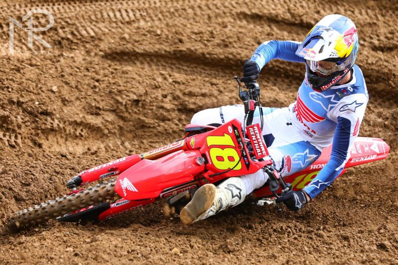

Disciplíny motokros a superkros jsou rámovány několika neuvěřitelně populárními a dobře organizovanými závodními sériemi v celosvětovém měřítku. Tisíce a tisíce fanoušků a diváků plní stadiony po celé Severní Americe na šampionát AMA Supercross, který se koná od ledna do května před americkými filtry sezóny v AMA Pro National Motocross a končí specifickými termíny SuperMotocrossu. AMA Supercross a Motocross jsou založeny na přísných výrobních pravidlech, která obsazují každou kategorii 450 a 250 SX a MX jako vynikající propagační platformy pro inovativní motocykly KTM SX.
Zdroje:
MOTOCROSS / SUPERCROSS US. Online. KTM. Dostupné z: https://www.ktm.com/cs-cz/racing/mx-sx.html [cit. 2024-06-03]., přeloženo
AMA Supercross 2024 – Philadelphia. Online. In: Moto-racing.eu. Dostupné z: https://www.moto-racing.eu/l/ama-supercross-2024-%E2%80%93-philadelphia/ [cit. 2024-06-03].